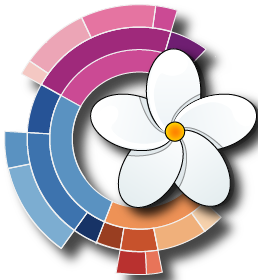

Global Data
Active Cases
New Cases
Recovered
Deaths
Number of New Cases
0-33-15
15-100
100-1000
1000+
Last Updated on March 22, 2020 at 12:00 AM GMT
Data is provided by Johns Hopkins CSSE from GitHub
Developed by Justin Bishay, Computer Science M.S. Student, Website
Laboratory for Advanced Visualization & Applications Hawaii Data Science Institute  University of Hawaii at Manoa
Last Updated on March 22, 2020 at 12:00 AM GMT
Data is provided by Johns Hopkins CSSE from GitHub